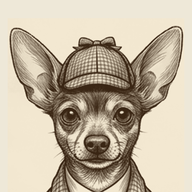
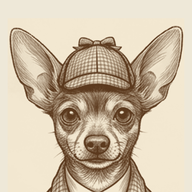
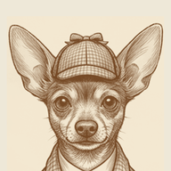
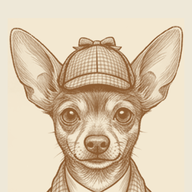

You were right — the darks were crushing to near-black. Each step below lifts the shadow colour and the midtones with it, so the line work reads as ink on paper rather than black on cream. All four are circle-fit B, as you chose.



